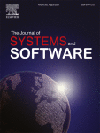
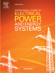
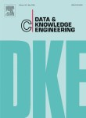
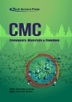
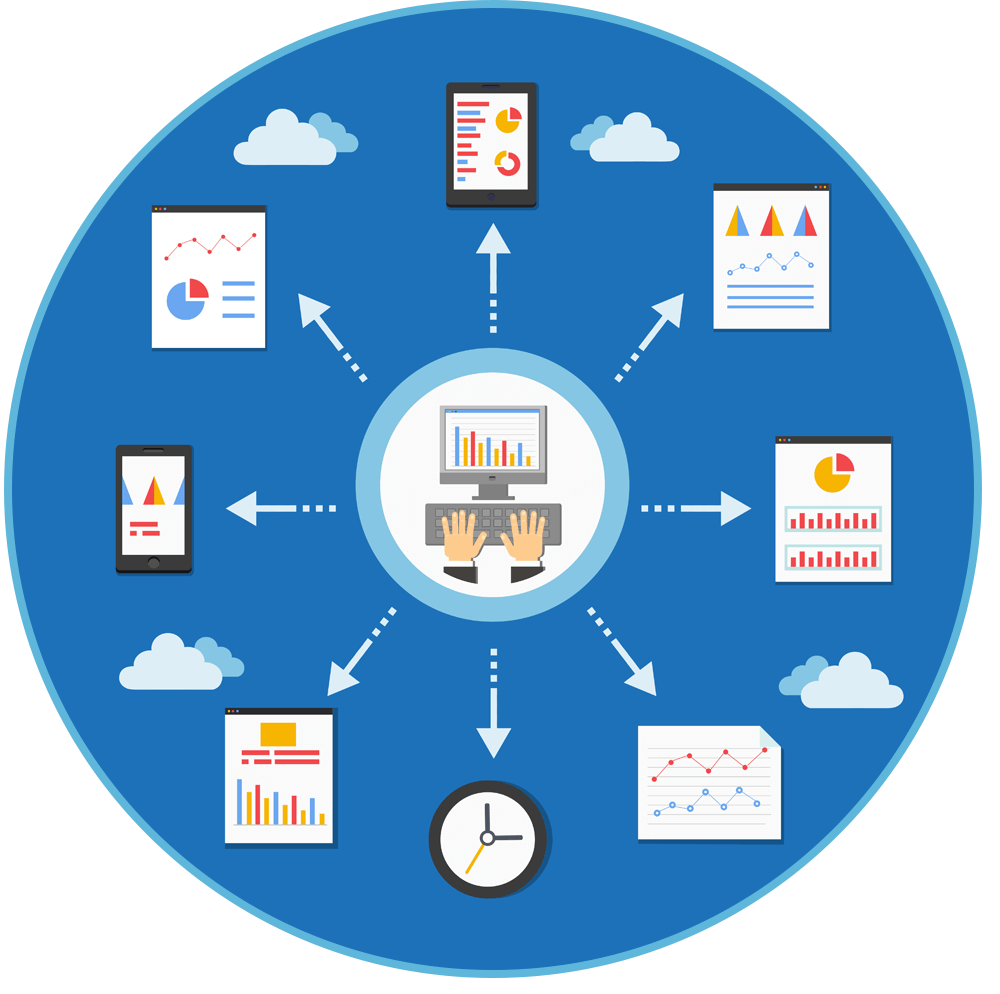

Sobre Mí
Perfil académico, motivaciones y propuesta de valor.
Ingeniería de Sistemas · Perú
Soy Max, un ingeniero de sistemas en formación cursando el sexto ciclo en la Universidad Señor de Sipán (USS), Chiclayo, Perú. Apasionado por la arquitectura limpia en el desarrollo de software de escritorio, la estructuración de algoritmos eficientes y la implementación de soluciones con bases de datos SQL.
Mi enfoque está en transformar requerimientos de negocio en soluciones técnicas reales: sistemas bien arquitecturados, queries eficientes y código mantenible. Me motiva el aprendizaje continuo y la construcción de herramientas que generen valor real para los usuarios finales.
Diseño y arquitectura de un software modular desarrollado en Java para automatizar el control de inventarios y procesos de facturación. Enfocado en la programación orientada a objetos, aplicando patrones de diseño para asegurar un código limpio, mantenible y preparado para la integración con sistemas de bases de datos.
🎯 Arquitectura de Software
🗄️ Bases de Datos SQL
☕ Java Script
🔌 Sistemas Embebidos
Formación Académica
Trayectoria educativa y certificaciones técnicas.
2023 — Actualidad
En Curso
Ingeniería de Sistemas
Universidad Señor de Sipán — USS
Chiclayo, Lambayeque, Perú
- 6to Ciclo · Régimen semestral
- Especialización en Desarrollo de Software y Bases de Datos
- Proyectos académicos en Java, C++, SQL Server y Arduino
2017 — 2022
Completado
Educación Secundaria Completa
I.E. Augusto B. Leguía
Chiclayo, Lambayeque, Perú
- Egresado con mención en ciencias
- Primer acercamiento a la programación y lógica computacional
Cursos & Certificaciones Complementarias
-
Arquitectura y Patrones de Diseño de Software Curso Académica — USS
-
Electrónica y Circuitos Digitales Proyectos prácticos — Arduino Oficial
-
Programación Orientada a Objetos y Paradigmas Curso Académica — USS
-
HTML5 Semántico y CSS3 Nativo Portafolio + Proyecto académico USS
Metas Profesionales
Hoja de ruta ejecutiva con enfoque en Arquitectura, Seguridad y Gobierno de TI.
Problemas que Puedo Resolver
Valor técnico y empresarial que aporto a proyectos de ingeniería.
Sistemas de Inventario
Control de stock con trazabilidad completa, alertas de mínimos, reportes de rotación y auditoría de movimientos en tiempo real.
- Gestión de entradas/salidas
- Control de caducidad
- Reportes automatizados
Automatización de Procesos
Eliminación de tareas manuales repetitivas mediante lógica programada, triggers automatizados y flujos de trabajo optimizados.
- Triggers y procedimientos
- Validaciones automáticas
- Flujos de aprobación
Bases de Datos SQL
Diseño de esquemas normalizados, consultas optimizadas, procedimientos almacenados y estructura relacional robusta.
- Modelado relacional 3NF
- Stored procedures
- Optimización de queries
Sistemas Académicos
Gestión de matrículas, control de notas, seguimiento de asistencia y generación de reportes académicos automatizados.
- Gestión de estudiantes
- Control de calificaciones
- Reportes institucionales
CRUD Empresariales
Desarrollo de módulos completos de gestión con operaciones Create, Read, Update, Delete sobre entidades de negocio.
- Interfaces intuitivas
- Validación de datos
- Búsqueda y filtrado
Modelado BPMN
Documentación y diseño de procesos de negocio mediante notación estándar BPMN para análisis y mejora continua.
- Diagramas de flujo
- Análisis de procesos
- Documentación técnica
Software de Escritorio
Aplicaciones desktop robustas en Java con arquitectura MVC, interfaces gráficas profesionales y conexión a bases de datos.
- Arquitectura en capas
- GUI profesional
- Integración con BD
Stack Técnico
Tecnologías, herramientas y entornos de desarrollo dominados.
Lenguajes de Programación
-
Java (NetBeans / IntelliJ) Intermedio
-
C++ (Qt Creator) Básico-Intermedio
-
JavaScript (Vanilla) Básico
Bases de Datos
-
SQL Server (T-SQL) Intermedio
-
MySQL / phpMyAdmin Básico
Desarrollo Web Frontend
-
HTML5 Semántico Intermedio
-
CSS3 (Flexbox / Grid) Intermedio
Herramientas & Entornos
-
Arduino IDE Básico-Intermedio
-
AutoCAD Básico
-
Bizagi Modeler (BPM) Básico
Dashboard Técnico
Indicadores de experiencia y métricas de desarrollo profesional.
Proyectos de Ingeniería
Sistemas y aplicaciones desarrollados en la carrera y proyectos personales.
SQL
Server
Database
Relational
Completado
Gestión Farmacéutica Relacional
Diseño e implementación de una base de datos relacional en SQL Server para una botica, con control automatizado de ventas, trazabilidad de caducidad de medicamentos, auditoría de stock y procedimientos almacenados para transacciones seguras.
Métricas del proyecto
- 14 tablas normalizadas en Tercera Forma Normal (3NF).
- 8 procedimientos almacenados para transacciones seguras.
- Triggers automatizados para control estricto de stock.
Arduino
C
Circuitos
IoT
Completado
Riego Autónomo Inteligente
Prototipo IoT basado en Arduino con sensores de humedad del suelo y lógica de control por relés para activar una electrobomba de forma autónoma, optimizando el consumo hídrico sin intervención manual.
Métricas del proyecto
- Integración de sensores de humedad en tiempo real.
- Control de flujo automatizado mediante relés y electrobomba.
- Código embebido optimizado para microcontroladores.
Arduino
C
Física
Signal
Processing
Completado
Analizador de Señales Analógicas
Sistema embebido para captura y procesamiento de señales analógicas, con modelado matemático de frecuencias y visualización gráfica de ondas electromagnéticas orientado al análisis técnico en entornos de laboratorio.
Métricas del proyecto
- Modelado matemático de frecuencias aplicadas al entorno.
- Captura y procesamiento de datos analógicos por hardware.
- Visualización precisa orientada a análisis de laboratorio.
C++
Qt
Framework
Desktop
Completado
Sistema de Gestión Bibliotecaria
Aplicación de escritorio nativa desarrollada en C++ con Qt Widgets para la administración completa de una biblioteca universitaria: catálogos ISBN, control de usuarios, préstamos, devoluciones y gestión estructurada de memoria.
Métricas del proyecto
- Interfaz gráfica nativa (GUI) optimizada con Qt Widgets.
- Control eficiente de flujo de préstamos, devoluciones e ISBN.
- Manejo estructurado de memoria mediante punteros y colecciones.
JavaScript
Frontend
En
Desarrollo
En
Desarrollo
POS de Gestión Gastronómica
Módulo web interactivo para la gestión operativa de una pollería, con automatización de comandas, control de inventario de insumos, mapeo dinámico de mesas y arquitectura en desarrollo hacia un flujo de caja completo.
Métricas del proyecto
- Módulo dinámico e interactivo para comandas y mapeo de mesas.
- Estructuración y manipulación de datos de pedidos locales.
- Estado actual: Fase de arquitectura para flujo de caja.
JavaScript
MySQL
Fullstack
Completado
Plataforma Tributaria Municipal
Plataforma fullstack para la gestión tributaria municipal, con liquidación automatizada de arbitrios e impuestos, procesamiento asíncrono de estados de cuenta y persistencia de datos relacionales segura en MySQL.
Métricas del proyecto
- Automatización del cálculo de arbitrios e impuestos ciudadanos.
- Arquitectura Fullstack con persistencia de datos relacionales en MySQL.
- Gestión asíncrona avanzada para estados de cuenta y reportes en tiempo real.
HTML5
CSS3
JavaScript
En
Desarrollo
Portafolio Web Profesional
Este portafolio es construido íntegramente con HTML5 semántico, CSS3 nativo y Vanilla JS, sin frameworks ni librerías externas. Cada sección, animación e interacción es en sí misma una demostración directa del nivel técnico alcanzado.
Descripción
- Construcción de portafolio web personal usando HTML5 semántico y CSS3 nativo.
- Diseño responsivo y accesible sin frameworks.
- Vanilla JS para interactividad avanzada.
Próximo proyecto en construcción...
Artículos y Publicaciones
Literatura técnica de referencia organizada por área de especialización.
Desarrollo de Software

Desarrollo de Software
Arquitectura de Microservicios con Java
Extracción automática de diagramas de flujo con seguridad avanzada para microservicios en Java.
Leer artículo →
Desarrollo de Software
Patrones de Diseño en la Práctica
Listas de verificación de seguridad para contratos inteligentes: patrones y mejores prácticas.
Leer artículo →
Desarrollo de Software
El Auge de la Programación Reactiva
Modelo estocástico de dos etapas para planificación proactiva en sistemas de energía resilientes.
Leer artículo →Gestión de Datos e IA

Gestión de Datos e IA
Optimización de Queries en SQL Server
Técnica de optimización de consultas SQL procedimentales con índices intermedios temporales.
Leer artículo →
Gestión de Datos e IA
IA Generativa Aplicada al Coding
Detección temprana de ciberacoso mediante modelos de IA generativos en diálogos multiparticipantes.
Leer artículo →
Gestión de Datos e IA
NoSQL vs Bases de Datos Relacionales
Marco de agrupamiento para conversión de almacenes NoSQL usando HDBSCAN sobre grandes datasets.
Leer artículo →Procesos e Ingeniería
Procesos e Ingeniería
Automatización de Procesos de Sistema Digital
Exploración de la automatización robótica de procesos (RPA) en sistemas digitales de gestión del tiempo.
Leer artículo →
Procesos e Ingeniería
Ciberseguridad en el Desarrollo Web
Uso de LLM fine-tuning para generar cargas sintéticas y mejorar seguridad web mediante pruebas de penetración.
Leer artículo →
Procesos e Ingeniería
Metodologías Ágiles: Scrum / Kanban
Integración del método Drum-Buffer-Rope con Scrum-Kanban y simulación Monte Carlo en gestión ágil.
Próximamente →Bitácora de Aprendizaje
Registro técnico del progreso de aprendizaje en Ingeniería Web y Sistemas.
Progresión de Aprendizaje Técnico
-
Sesiones 1–2
Estructura Estándar de Documentos Web
<html> · <head> · <body>Arquitectura raíz del documento: declaración del idioma, metadatos de configuración y separación lógica entre cabecera informativa y cuerpo visible.
Dominado -
Sesión 3
Semántica HTML5 Avanzada
<header> · <nav> · <main> · <section> · <article> · <aside> · <footer>Estructuración modular del documento para optimización SEO, accesibilidad ARIA y la arquitectura de panel lateral implementada.
Dominado -
Sesión 4
Multimedia Integrada y Accesible
<img> · <video> · <audio> · <figure> · <figcaption>Incrustación de recursos audiovisuales con texto alternativo semántico, lazy loading nativo y control de decodificación.
Dominado -
Sesión 5
Tablas de Datos Estructuradas
<table> · <thead> · <tbody> · <th scope> · <caption>Modelamiento matricial de datos relacionales. Uso correcto de scope y caption para accesibilidad.
Dominado -
Sesiones 8–9
Estilos Modernos CSS3
gradients · box-shadow · CSS Variables · :root · custom propertiesSistema de diseño centralizado con variables CSS para paleta de colores, tipografía y espaciado.
En Progreso -
Sesión 10
Maquetación Avanzada con CSS
display: flex · display: grid · grid-template-areas · gap · fr unitArquitectura de dos columnas de este portafolio, grid de proyectos y alineación de componentes complejos.
En Progreso -
Sesiones 11–12
Interactividad y Microanimaciones CSS
transition · transform · @keyframes · :hover · :focus-visibleMicrointeracciones en tarjetas, efectos de hover en el menú lateral y animaciones con IntersectionObserver.
Pendiente -
Sesiones 13–14
Responsividad y Mobile First
@media queries · clamp() · min() · max() · viewport unitsAdaptación del layout a pantallas móviles con hamburger menu y tipografía fluida.
Pendiente
Registro Tabular de Sesiones
| Sesión | Concepto Clave | Etiquetas / Tecnologías | Aplicación en el Portafolio | Estado |
|---|---|---|---|---|
| 1–2 | Estructura Estándar | <html>, <head>, <body> |
Arquitectura raíz y declaración semántica del idioma. | Dominado |
| 3 | Semántica HTML5 | <header>, <nav>, <section> |
Estructuración modular del layout de dos columnas. | Dominado |
| 4 | Multimedia Integrada | <img>, <video>, <audio> |
Recursos audiovisuales con lazy loading y alt semántico. | Dominado |
| 5 | Tablas de Datos | <table>, <th scope>, <caption> |
Tablas académicas y bitácora con accesibilidad ARIA. | Dominado |
| 8–9 | Estilos CSS3 Modernos | gradients, variables CSS, box-shadow |
Sistema de diseño con custom properties :root. | En Progreso |
| 10 | Maquetación Avanzada | flex, grid, grid-template-areas |
Layout sidebar + main, grids de proyectos y artículos. | En Progreso |
| 11–12 | Microanimaciones | transition, transform, @keyframes |
Efectos interactivos en tarjetas y menú lateral. | Pendiente |
| 13–14 | Responsividad Mobile First | @media, clamp(), min(), max() |
Adaptación del layout a móvil con hamburger menu. | Pendiente |
Nota técnica: Este registro documenta la construcción nativa del portafolio, garantizando la progresión desde estructura semántica base hasta maquetación empresarial responsiva.
Galería Multimedia
Presentación audiovisual del perfil y demostración de proyectos.
Video Académico
PresentaciónAudio de Bienvenida
MensajeHobbies e Intereses
Lo que me apasiona fuera del código y los bytes.

Gimnasio

Moto
Series y Cine
Fútbol & Gaming
Salsa & Reggaetón
Investigación Tecnológica

Automatización IoT
Hub de Contacto
¿Tienes un proyecto o consulta? Escríbeme directamente.